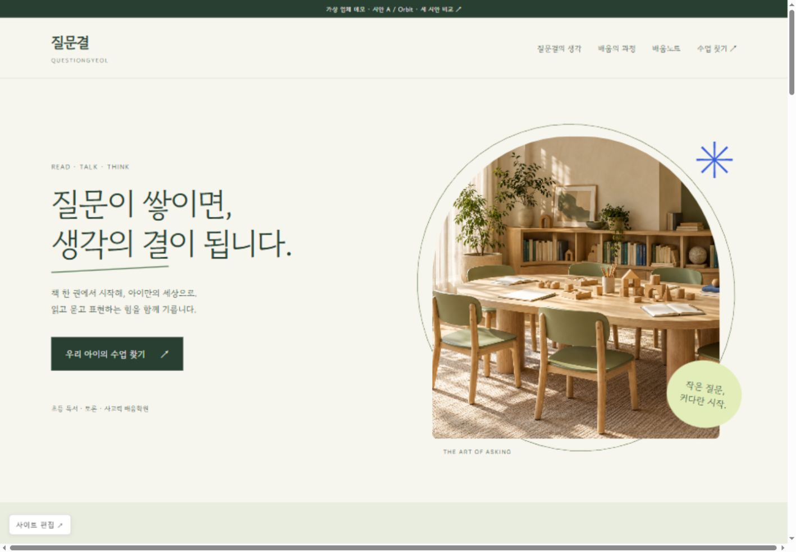
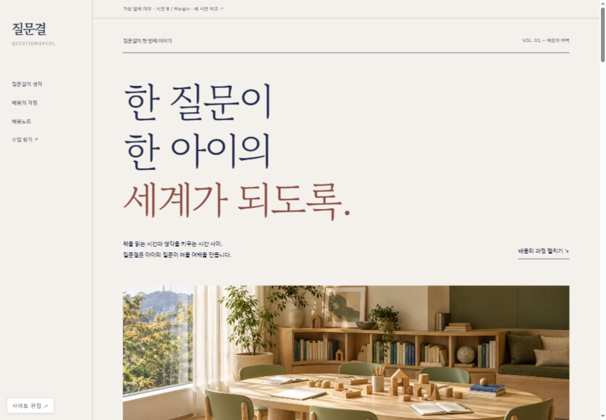
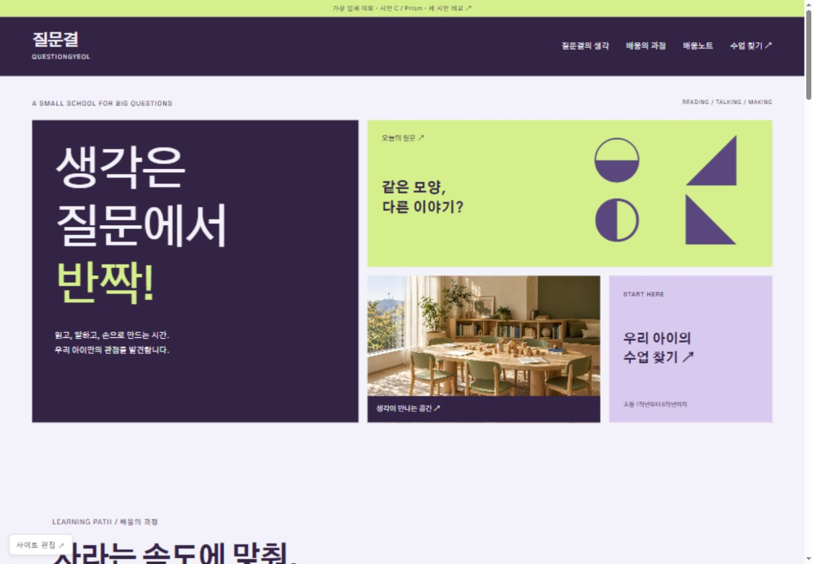

CONCEPT A · 추천Orbit
자연스러운 곡선과 올리브. 아이의 질문을 따뜻하게 품는 배움 공간.
시안 둘러보기 ↗배포 후 편집기 ↗가상 브랜드 질문결 배움학원 · 책과 대화, 손으로 하는 탐구를 잇는 초등 교육기관.
이슈 #73에서 선택한 ‘우리 아이의 수업 찾기’ 조합을 세 가지 독립적인 디자인으로 제작했습니다.

CONCEPT A · 추천자연스러운 곡선과 올리브. 아이의 질문을 따뜻하게 품는 배움 공간.
시안 둘러보기 ↗배포 후 편집기 ↗
CONCEPT B정갈한 명조와 편집 지면. 학원의 교육 철학을 차분하게 읽는 경험.
시안 둘러보기 ↗배포 후 편집기 ↗
CONCEPT C플럼과 라임의 대비. 질문과 탐구를 생동감 있게 보여주는 타일 구조.
시안 둘러보기 ↗배포 후 편집기 ↗| 항목 | A · Orbit | B · Margin | C · Prism |
|---|---|---|---|
| 구조 | 유기적 좌우 분할 | 고정 서가형 내비게이션·편집 지면 | 인터랙티브 모자이크 |
| 첫 화면 | 곡선 교실 사진 | 초대형 문장과 가로 사진 | 질문 타일과 탐색 링크 |
| 서체 | Gowun Dodum / Manrope | Gowun Batang / IBM Plex Sans KR | Gothic A1 / Space Grotesk |
| 색 | 아이보리·올리브 | 페이퍼·잉크 네이비 | 플럼·라임·라일락 |
세 시안 모두 과정 상세 펼치기, 수업 찾기, 상담 준비 메모 복사·저장, 배움노트 읽기와 모바일 메뉴를 제공합니다. 실제 예약은 접수하지 않습니다.
다음 단계에서는 선택한 방향을 독립적인 완성 사이트로 확장합니다.